顔口 ザン→ヤㇺ→ 【顔口】
[名詞] 口
名詞として口を指す場合は主にこちらを用いる。
 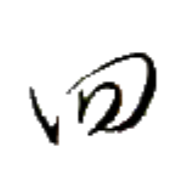
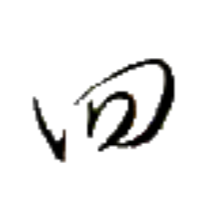
ター→ 【目】
[動詞] 見る
[前置詞] 〜を基準として
[名詞] 〔稀に〕目
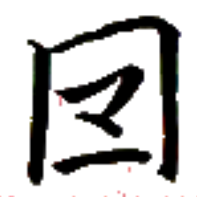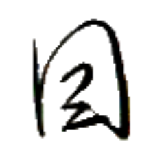
ベゥー→ 【全】
[連体詞] 全ての
[名詞] 全て
[副詞] 最も
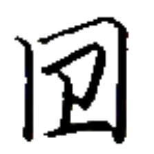
ツェゥー⤴ 【巻】
[動詞] 巻く、回す、ねじる
[名詞] 巻物、巻かれたもの
巻周 ツェゥー⤴セイ⤴ 【巻周】
[動詞] (その場で)回転する
[名詞] (その場での)回転
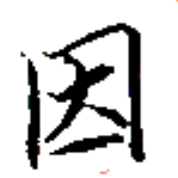
ピアー⤴ 【囲】
[名詞] 部屋
[名詞] （ボードゲームの）マス
[動詞] 〔稀に〕囲む
顔口 ザン→ヤㇺ→ 【顔口】
[名詞] 口
名詞として口を指す場合は主にこちらを用いる。
之子 ア·カㇳ→ 【之子】
[名詞接続詞] ガートゥ、カトゥ（人名構成要素）
バート民族の名前において、2 つの人名の間に配置されて、「～の子である…」という人名を構成する。
トゥイ⤴ 【与】
[動詞] 与える
[節要求動詞] ～させる、～させてあげる
無水与墨 ムン→ヌアー⤴トゥイ⤴フオウ⤴ 【無水与墨】
[四字熟語] 水不足のところに墨を贈っても、使えないどころか、むしろ失火時に燃料になってしまうことから、独り善がりなお節介によるありがた迷惑を表す。
 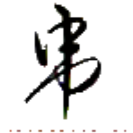
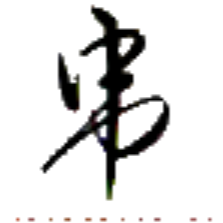
バㇷ゚· 【同】
[副詞] ～もまた
[連体詞] 同じ
[状態動詞] 同じである
 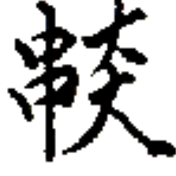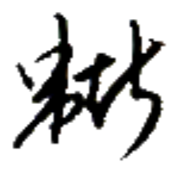
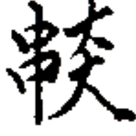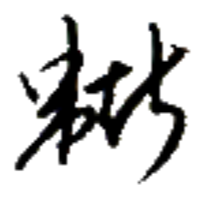
ズオウ⤴ 【類】【属】
[接尾辞] （名詞の後について、その物で代表されるカテゴリーを表す）
輩島 フオㇰ→ドㇷ゚→ 【輩島】
[名詞] 蒼島（ヴェフィス共和国を構成する島の一つ）


 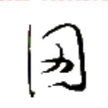
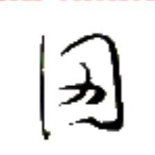
 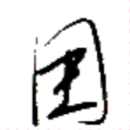
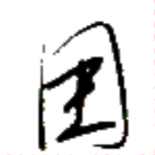
 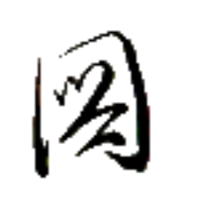
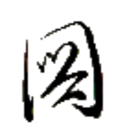


 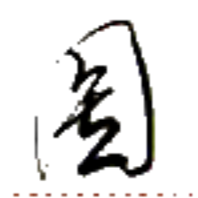
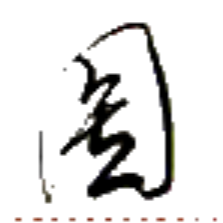
 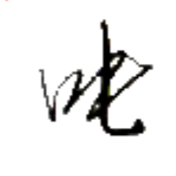
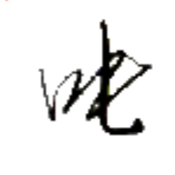